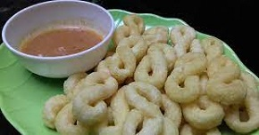

|
Bahan-bahan
- 0,5 kilo gram Tepung kanji.
- 2 ons kelapa parut.
- 5-8 siung bawang putih.
- 1/2 sendok makan Ketumbar.
- Garam secukupnya.
- Penyedap rasa secukupnya.
- Air secukupnya untuk adonan.
- 2 liter Air digunakan untuk merebus adonan.
Cara Pembuatan
- Giling semua bumbu yang sudah siapkan. Jika ingin menggiling bumbu secara halus, bisa menggunakan mesin penepung diskmill serbaguna
- Rebus 2 litel air sampai mendidih.
- Campurkan tepung kanji dan parutan kelapa kedalam air mendidih.
- Tambahkan air sedikit demi sedikit tapi jangan sampai terlalu lembek.
- Setelah itu bagi adonan menjadi 3 bagian, bentuk adonan menjadi bulat. lalu masukkan adonan ke dalam air mendidih kurang lebih sekitar 3 menit lalu angkat.
- Letakkan adonan pada nampan atau tampah. potong-potong mengunakan pisau hingga terurai semua. tunggu sebentar hingga panas sedikit berkurang.
- Uleni adonan hingga bagian yang masak dan bagian tengah yang masih mentah tercampur rata. Ulet terus sampai tepung kanji tidak ada yang lengket di nampan atau tampah.
- Bagi kembali adonan menjadi 3 bagian, bentuk adonan menjadi selinder dengan diameter kira-kira 10 cm.
- Kemudian potong adonan menjadi kecil panjang dengan ukuran 3cm.
- Pelintir lagi dan buat selinder kecil bagian kecil hingga seukuran ibu jari.
- Lalu bentuk menjadi angka 8. terserah selera anda
- Tahap terakhir menggoreng hingga kering.
- Lalu siap disajikan dengan minuman hangat.
|